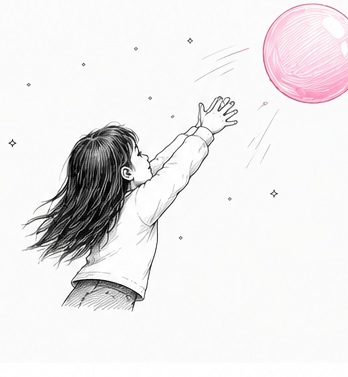
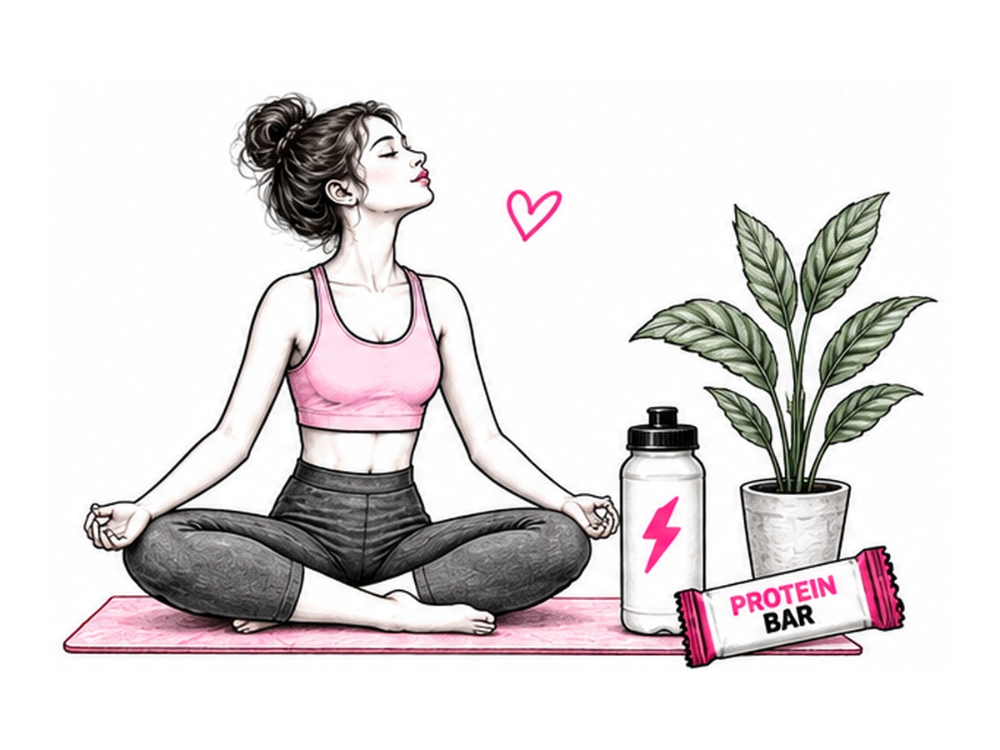

Реальная среда
Кофе, перекус, дорога, встреча, тренировка. Реальный контекст — реальные эмоции.
Тестируем продукты в реальной среде — среди людей, которые уже живут, работают, тренируются, учатся и принимают решения о покупке. К каждому — свой подход.

Кофе, перекус, дорога, встреча, тренировка. Реальный контекст — реальные эмоции.
Готовим по сценарию и выдерживаем температуру, время, порцию и подачу.
50–150 посетителей в день на точку — быстрый доступ к живой аудитории.
Офлайн-опросы, дегустации, фокус-группы, интервью и видео-комментарии.
При серии исследований снижается стоимость следующего теста и ускоряется запуск.
Состав, польза, калорийность, функциональность и баланс вкуса.
Регулярные тренировки и высокие требования к функциональности продукта.
Влияют на выбор и частоту покупки. Важно услышать именно их мотивацию.
Выбирают для себя и семьи, оценивают пользу, рациональность, вкус и эмоции.
Следит за трендами, быстро реагирует на новинки, внешний вид и коммуникацию.
Люди в тренде, постоянно работающие и часто в стрессе. Часто имеют особое мнение о продукте.
Особенно — продукты питания: снеки, кондитерские изделия, напитки, молочные продукты, мясная гастрономия и другие категории.
Смотрим на продукт глазами потребителя, технолога и маркетолога. Поэтому оцениваем вкус, состав, упаковку, дизайн, claims, позиционирование и продвижение.
вкус • аромат • текстура • хруст • сладость • послевкусие
первичный выбор • заметность • понятность • привлекательность • A/B
позиционирование • claims • коммуникация • мотиваторы выбора • продвижение
Для измеримого сравнения образцов, концепций или сегментов на реальной аудитории.
Когда важно понять «почему». Мотивы, язык потребителя, барьеры, реакции на идею, упаковку, дизайн и коммуникацию.
Для выбора рецептуры, сравнения с конкурентом и оценки сенсорных характеристик.
Первичный выбор, заметность, доверие, понятность, привлекательность и соответствие ожиданиям.
Чтобы ваша команда сама услышала интонации, аргументы, сомнения и эмоции потребителей.
Для задач, где важны сценарии потребления, история выбора и персональные мотивы.
Бизнес-вопрос, ЦА и KPI
Сценарий, анкета и критерии
Выбираем кофейню из базы
Опросы, A/B, дегустации
Данные, мотивы, инсайты
Живые ответы по запросу
Рекомендации и ТЗ
Понимаем, что движет выбором
Формируем конкретные изменения
Внедряем выводы в продукт и продвижение
Проверяем новую версию

Кофейни дают нам быстрый доступ к реальным потребителям в естественной ситуации выбора.
Для конкретной продуктовой задачи и быстрого решения.
от 190 000 ₽Несколько тестов в течение 3–6 месяцев для разработки или перезапуска линейки.
от 3 исследованийРегулярная программа на 3, 6 или 12 месяцев. Быстрее запуск и ниже стоимость каждого теста.
индивидуальные условияМожно начать с одного теста и затем перейти к регулярной программе.
rnd@lanny.group +7 (926) 372-86-63